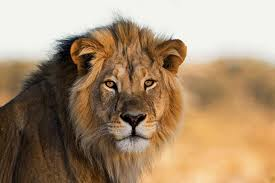

A Glimpse into the Wild

The Spirit of the Plains
This majestic wild animal, often found roaming the vast plains, symbolizes the untamed beauty of nature. Its powerful presence and graceful movements are a testament to the resilience and raw power of the animal kingdom. The photograph captures a moment of pure focus and serenity.